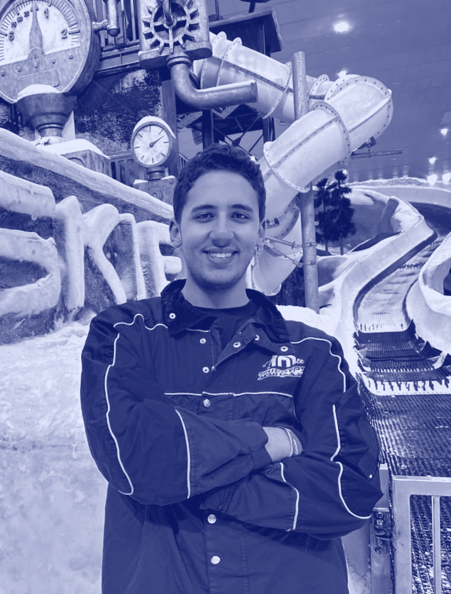

Medicine, and the things we don’t say out loud.
Medical student driven by curiosity and a genuine openness to diverse clinical paths.
01 — three worlds
02 — the numbers
7organ systemsEach one tied to a case, a talk or a study.
5tutorials taughtSlide decks for surgery, medicine, pediatrics and gynaecology.
5grand rounds and postersPresented across semesters 2 to 5.
2studies in progressMultiple sclerosis awareness and a cardiology drug comparison.
03 — out loud
Leadership and management skills project
Reducing unnecessary C-sections
72.2%
C-section rate in 2021, up from 51.8% in 2014 and 27.6% in 2008.
“Silence is not neutral.” 🍉